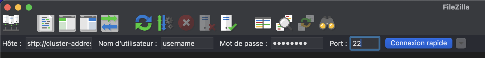
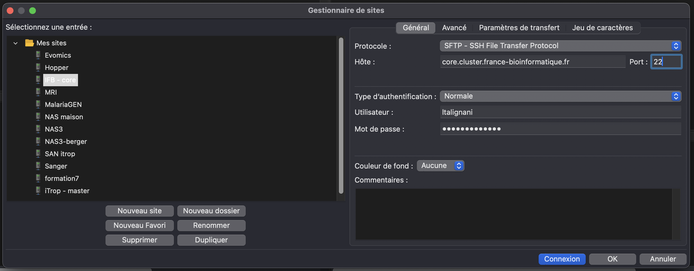
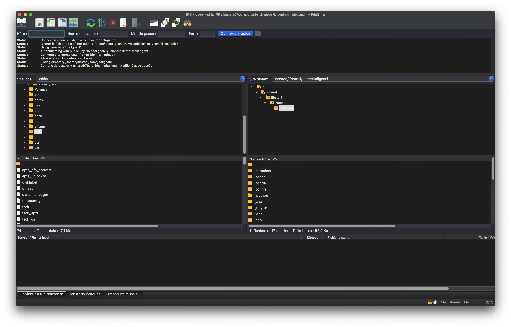

Transfering Files Using FileZilla and SFTP¶
Table of Content
This guide explains how to transfer files from your local computer to a computing cluster using FileZilla and the SFTP protocol (SSH File Transfer Protocol).
Prerequisites¶
Before getting started, make sure you have:
- FileZilla Client installed on your computer
- Connection credentials for the cluster (username, password, or SSH key)
- Server address of the computing cluster
- Connection port (typically 22 for SFTP)
Installing FileZilla¶
Windows¶
- Download FileZilla Client from the official website: https://filezilla-project.org/
- Run the installer and follow the installation instructions
- Launch FileZilla from the Start menu
Linux (Ubuntu/Debian)¶
Linux (CentOS/RHEL/Fedora)¶
macOS¶
- Download FileZilla Client from the official website
- Open the downloaded
.dmgfile - Drag FileZilla to the Applications folder
- Launch FileZilla from Launchpad
Configuring SFTP Connection¶
Method 1: Quick Connect¶
- Open FileZilla
- In the quick connect bar at the top, enter:
- Host:
sftp://cluster-address.example.com - Username: your username
- Password: your password
- Port: 22 (or the port specified by your administrator)
- Click Quickconnect

Method 2: Site Manager (recommended)¶
- Go to File → Site Manager
- Click New Site
- Give your connection a name (e.g., "Computing Cluster")
- Configure the settings:
- Protocol: SFTP - SSH File Transfer Protocol
- Host: cluster-address.example.com
- Port: 22
- Logon Type:
- Normal (username + password)
- Key file (if using SSH private key)
- User: your username
-
Password: your password (if using normal authentication)
-
Click Connect

SSH Key Authentication¶
If your cluster uses SSH key authentication:
- In the Site Manager, select Key file as the logon type
- Click Browse next to "Key file"
- Select your SSH private key (typically
~/.ssh/id_rsaor~/.ssh/id_ed25519) - If your key is not in PPK format, FileZilla will offer to convert it automatically
FileZilla Interface¶
Once connected, the FileZilla interface is divided into several sections:
- Local panel (left): files and folders on your computer
- Remote panel (right): files and folders on the cluster
- Message window (top): connection and transfer status
- Transfer queue (bottom): transfer queue

Transferring Files¶
Simple Transfer¶
- Navigate through your local folders (left panel)
- Navigate to the destination directory on the cluster (right panel)
- Drag and drop files from the local panel to the remote panel
- Alternatively, right-click on a file → Upload
Folder Transfer¶
To transfer an entire folder:
- Select the folder in the local panel
- Drag it to the remote panel
- FileZilla will automatically transfer all contents
Monitoring Transfers¶
The transfer queue window allows you to:
- View progress of ongoing transfers
- Pause or cancel transfers
- Resume interrupted transfers
Best Practices¶
Security¶
- Always use SFTP instead of FTP for secure connections
- Verify the server fingerprint on first connection
- Use SSH keys instead of passwords when possible
- Close the connection after use
Performance¶
- Adjust the number of simultaneous connections in Edit → Settings → Transfers
- Use compression for large text files
- Avoid transferring many small files; prefer archives
Organization¶
- Create profiles in the Site Manager for different clusters
- Use bookmarks to mark frequently used directories
- Synchronize directories with the synchronization feature
Common Troubleshooting¶
Connection Failure¶
- Verify the server address and port
- Confirm your credentials
- Check that SSH service is active on the cluster
- Contact the system administrator if necessary
Slow Transfers¶
- Check your internet connection
- Adjust the number of simultaneous connections
- Use compression for appropriate files
Permission Errors¶
- Verify that you have write permissions in the destination directory
- Contact the administrator to adjust permissions if necessary
Alternative SFTP Commands¶
For advanced users, here are some command-line SFTP commands:
# SFTP connection
sftp username@cluster-address.example.com
# Navigation
ls # List remote files
lls # List local files
cd /path/to/directory # Change remote directory
lcd /local/path # Change local directory
# Transfer
put localfile.txt # Upload a local file
get remotefile.txt # Download a remote file
put -r local_folder # Upload a folder (recursive)
get -r remote_folder # Download a folder (recursive)
# Exit
quit
Additional Resources¶
- Official FileZilla Documentation
- SSH and SFTP Guide
- Contact your system administrator for specific configurations